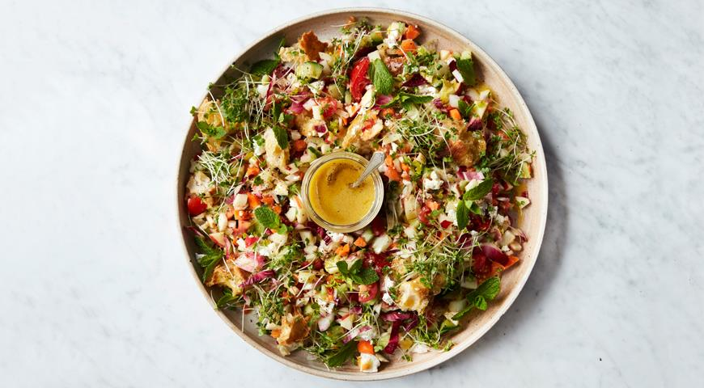
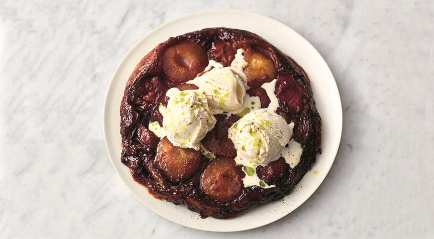
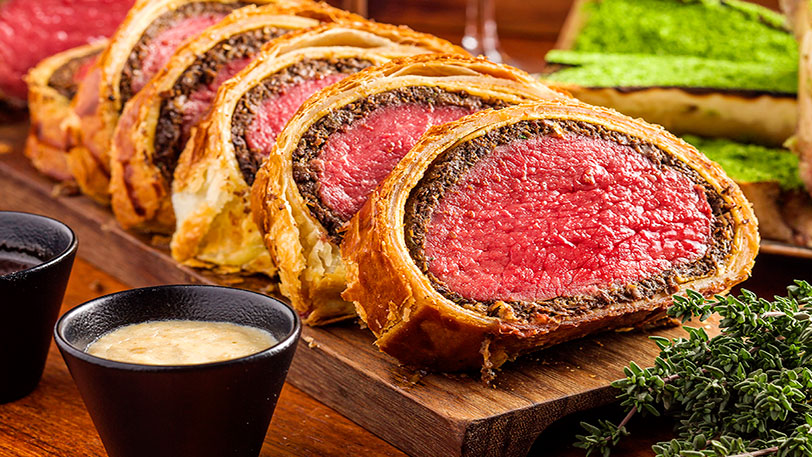

Салат из всего, что есть в холодильнике
Если порыться в холодильнике, то вы сами удивитесь, сколько разнокалиберных овощей, зелени, остатков сыра там обнаружится.
Такой салат - блюдо из всего, что под рукой, результат ревизии холодильника, которую стоит делать каждую неделю. Разумеется,
состав овощей может быть любой - что нашли, то и добавили. Элементарная, но вкусная заправка уравновесит любые сочетания.
- Разогрейте духовку до 180С.
- Нарежьте хлеб кубиками, выложите в один слой на большой противень и сбрызните оливковым маслом. Отправьте в духовку на 15 мин., пока сухарики не станут хрустящими и золотистыми.
- Все ингредиенты для заправки соедините в небольшой баночке, плотно закройте банку и потрясите. Попробуйте заправку и добавьте еще перца или соли, если нужно.
- Все овощи и зелень (кроме мелких листьев салата) вымойте, обсушите. Морковь очистите, у фенхеля вырежьте кочерыжку и разберите на листья, у яблока удалите кочерыжку, листики мяты снимите со стеблей.
- Выложите все подготовленные овощи и зелень на большую доску и порубите большим ножом. Чем мельче - тем лучше.
- Выложите салат в миску, сверху раскрошите фету, посыпьте салат сухариками. Отдельно подайте заправку, чтобы каждый заправил салат так, как ему нравится.

Сливовый тарт-татен
Классический тарт-татен готовят с яблоками. Но этот открытый пирог настолько популярен, что появилось множество вариантов
тарт-татена с другими фруктами и ягодами. Джейми готовит его из слив с добавлением кленового сиропа, а подает с щариком мороженого, как штрудель.
- Разогрейте духовку до 220 С. Поставьте на средний огонь жаропрочную сковороду с антипригарным покрытием диаметром 26 см.
- Разрежьте сливы пополам, выньте косточки и положите в сковороду. Влейте 30 мл воды и готовьте 1 минуту. Посыпьте половиной корицы и полейте кленовым сиропом. Накройте пластом теста, подоткните его по краям с помощью деревянной лопатки, срежьте лишнее и, если нужно, закройте отверстия.
- Выпекайте на нижнем уровне духовки 16 минут, пока тесто не поднимется и не подрумянится. Наденьте кухонные рукавицы и аккуратно переверните пирог на тарелку большего диаметра. Подавайте с шариком ванильного мороженого, посыпав оставшейся корицей и сбрызнув оливковым маслом extra virgin.

Говядина Веллингтон от Джейми
По одной легенде, ее очень любил первый герцог Веллингтон и премьер-министр Великобритании Артур Уэлсли. По другой — так назвал
классическое французское блюдо «Filet de bœuf en croûte» британский повар во время Наполеоновских войн (вероятно, из патриотических
соображений). В ресторанах говядину Веллингтон подают либо в форме рулета из вырезки, либо в форме порционных «пирожков» из стейка
Филе-миньон. Оба варианта готовятся по единому сценарию.
- Достаем вырезку из упаковки, протираем бумажными полотенцами, чтобы убрать влагу. Пусть отдохнет полчаса и подышит кислородом.
- Посыпаем деревянную доску солью и перцем, мелко-рубленным розмарином
- Положим вырезку на доску и обваляем ее в этих специях.
- На разогретую сковороду наливаем оливкового масла (буквально пару-тройку столовых ложек) и растапливаем в нем кусочек сливочного.
- Обжариваем вырезку до приятной и равномерной карамельной корочки. Сейчас важно только задать корочку — до готовности мясо дойдет позже. Положили — подержали 30-60 секунд на каждой поверхности — перевернули. В конце переложили вырезку на тарелку.
- Теперь отправляем в сковороду куриную печень, 4 столовые ложки вустерского соуса и крышечку оливкового масла.
- Раскатываем прямоугольный пласт теста до 0,5 см толщиной. Не забудьте присыпать мукой поверхность стола, чтобы тесто не прилипало. Аккуратно выкладываем на тесто грибную начинку, оставляя по краям 3 см. Их смазываем яичным желтком.
- На грибы выкладываем вырезку и заворачиваем ее в рулет и ставим выпекать в разогретую духовку на 40 минут при 200 градусах.
- Затем противень вынимаем из духовки и прямо на бумаге перекладываем готовый рулет на доску или тарелку. Не оставляйте рулет на горячем противне — иначе он пересушится.